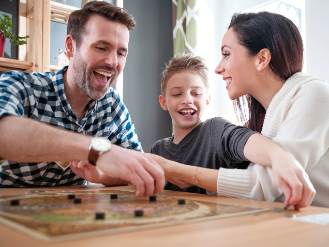

The Surprising Benefits Your Kids Get From Playing Board Games
 If you are anything like me, every time you make a "Donate" pile in your kid's room, you find yourself
eyeing the
wayward stack of board games in the closet and wondering if it is worth keeping them.
Turns out, despite all of the digital gaming options today, the old-school games are still in stores for
a reason and they're definitely worth hanging on to! I spoke with child developmental experts to get the
inside scoop on why board games are amazing for our kids, and why family game night should totally be a
thing.
Board Games Make Unplugging a New Habit
The lack of technology required to play a board game makes them special, explains Beatrice Tauber Prior, Psy.D., a clinical psychologist, author, and owner of the private practice Harborside Wellbeing. For that reason, board games are a simple way to get some quality, screen-free time with the kids and you might be surprised by how much they love it. "Families are struggling to find the balance between digital and [real-life] connections, but board games provide a tool for that emotional connection to each other," says Prior. Order pizza and make it a way to celebrate the start of the weekend together!
They Offer Opportunities for Early Learning
Simple games like Candy Land and Hi-Ho! Cherry-O help young players identify colors, count spaces, and even develop hand-eye coordination and dexterity in moving cards and pieces around the board. Plus, learning to wait your turn and follow the rules are important lessons that serve kids far beyond the living room floor.
Board Games Get Older Kids' Brains Buzzing, Too
Forget flashcards and workbooks: Board games are an easy way to encourage healthy brain development in older kids and teens. 'Strategy games', including Clue, Sequence, and card games are useful in helping the frontal lobes of the brain develop,'' explains Prior. 'Those frontal lobes are responsible for executive function skills, which include planning, organizing, and making good decisions.'
Boost Their Language Skills
Board games can be a sneaky way of helping school-aged kids work on skills they are struggling with. Have a reluctant reader? A round of classic Boggle, Scrabble, or the Bob Books Happy Hats Beginning Reading Game will help him expand his vocabulary and flex his spelling skills. Meanwhile, a game like Clue, in which players have to remember several pieces of information at once (who did what, and where) might help a child who is having trouble with reading comprehension all while she's having fun.